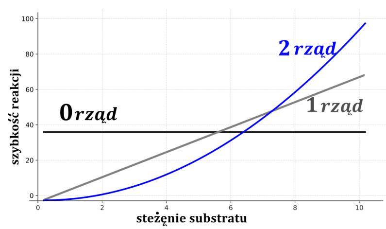
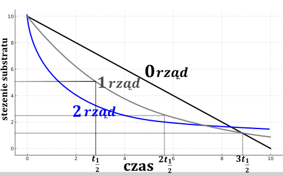
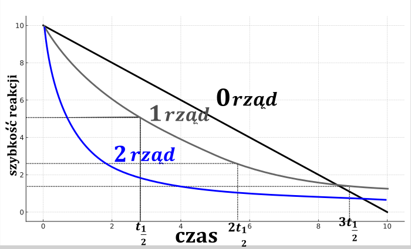

Scałkowane równania kinetyczne to zależności stężenia substratów od czasu, są one różne dla reakcji różnych rzędów, innymi słowy zależy to od rzędu reakcji. Typowo omawia się rzędy 0, 1, 2. Scałkowane wzory będą ewentualnie podane zostanąw info wstępnej, jeżeli będą one potrzebne w zadaniu. O dziwo na potrzeby starej matury (2015) należy rozumieć i znać przedstawione dalej wykresy, wynikające z scałkowanych równań kinetycznych.
Kinetykę reakcji zerowego rzędu można opisać równaniem:
\[\mathbf{v} = - \frac{d\lbrack A\rbrack}{d\lbrack t\rbrack} = \mathbf{k}\left\lbrack \mathbf{A} \right\rbrack^{\mathbf{0}} = k\]
Podsumowując:
\[- \frac{d\lbrack A\rbrack}{dt} = k\]
Czego rozwiązaniem jest (co oczywiście powinni podać nam w informacji wstępnej)
\[\left\lbrack A(t) \right\rbrack = \left\lbrack A_{0} \right\rbrack - kt\]
W przedstawionym wzorze \(\left\lbrack A(t \right)\rbrack\) oznacza stężenie reagenta A po czasie interesującym nas czasie. \(\lbrack A_{0}\rbrack\) to stężenie początkowe. \(k\) to stała szybkości reakcji, a \(t\) to czas
\[\left\lbrack A(t) \right\rbrack = \left\lbrack A_{0} \right\rbrack - kt\]
Umieszczając na wykresie \(\left\lbrack A(t) \right\rbrack\) w zależności od czasu powinniśmy uzyskać linię prostą, jednocześnie możemy stwierdzić, iż jeżeli wykres \(\lbrack A(t)\rbrack\) od czasu jest linią prostą to reakcja jest zerowego rzędu.
Czas połowicznego rozpadu \(t_{\frac{1}{2}}\) \(= t_{połowicznego\ zaniku}\) to czas, po, jakim przereaguje połowa substratu. Jednocześnie, jeżeli przereaguje połowa substratu to również połowa zostanie nieprzereagowana, w związku, z czym stężenie reagenta A po tym czasie połowicznego zaniku musi być równe \(\left\lbrack A\left( t_{\frac{1}{2}} \right) \right\rbrack = \frac{1}{2}\left\lbrack A_{0} \right\rbrack\) . Wstawiając te zależności do wyrażenia na scałkowane równanie kinetyczne otrzymujemy:
\[\frac{1}{2}\left\lbrack A_{0} \right\rbrack = \left\lbrack A_{0} \right\rbrack - kt_{\frac{1}{2}}\]
\[t_{\frac{1}{2}} = \frac{1}{2}\frac{\left\lbrack A_{0} \right\rbrack}{k}\]
Wyprowadzone równanie dla reakcji zerowego rzędu zależy od stężenia początkowego reagenta, więc czas połowicznego zaniku nie jest wartością stałą dla reakcji zerowego rzędu.
Kinetykę pierwszego rzędu można opisać równaniem:
\[v = k\lbrack A\rbrack^{1}\]
\[- \frac{d\lbrack A\rbrack}{dt} = k\lbrack A\rbrack\]
Po scałkowaniu otrzymujemy równanie kinetyczne dla reakcji pierwszego rzędu:
\[\ln\left\lbrack A(t) \right\rbrack = \ln\left\lbrack A_{0} \right\rbrack - kt\]
W którym występuje symbol
\(\ln{(\
)}\)
.Oznacza on logarytm o podstawie liczby Eulera
\(e\)
- liczby niewymiernej, a więc z gatunku
takich jak
\(\pi\)
, w tym wypadku jest
to wartość
\(e\)
równa
\(2.78\ldots\ \)
. Można oznaczyć ten symbol
również jako
\({\log_{e}()}\ \)
.
Odwrotnością logarytmu naturalnego jest liczba Eulera podniesiona do
odpowiedniej potęgi, co można zapisać jako
\(\ln x = a\overset{\ }{\Leftrightarrow}x =
e^{a}\)
. W praktyce dla nas oba wyrażenia znaczą tyle, co symbol
na kalkulatorze. W równaniu występuje jeszcze
\(\lbrack A(t)\rbrack\)
oraz
\(\lbrack A_{0}\rbrack\)
– stężenie molowe
substratu odpowiednia po określonym czasie oraz na początku reakcji,
\(k\)
- stała szybkości reakcji,
\(t\)
– czas prowadzenia reakcji.
Równanie
\[\ln\left\lbrack A(t) \right\rbrack =
\ln\left\lbrack A_{0} \right\rbrack - kt\]
możemy przekształcić do postaci
\[\ln\frac{\left\lbrack A(t) \right\rbrack}{\left\lbrack A_{0} \right\rbrack} = - kt\]
Co wykorzystując prawa działań na logarytmach prowadzi na do równania:
\[\frac{\left\lbrack A(t) \right\rbrack}{\left\lbrack A_{0} \right\rbrack} = e^{- kt} \rightarrow \left\lbrack A(t) \right\rbrack = \lbrack A_{0}\rbrack e^{- kt}\ \ \ \ e = 2.78\ldots.\]
Który to wzór umożliwia obliczenie stężenia reagenta \(\lbrack A(t)\rbrack\) po czasie
Równanie:
\[\ln\left\lbrack A(t) \right\rbrack = \ln\left\lbrack A_{0} \right\rbrack - kt\]
Mogę również przekształcić do postaci z logarytmem dziesiętnym, wykorzystując wzór na zamianę logarytmów: \(\ln{\left\lbrack A(t) \right\rbrack = \ln 10{·log}_{10}{\lbrack A(t)\rbrack}}\)
\[\ln\left\lbrack A(t) \right\rbrack = \ln\left\lbrack A_{0} \right\rbrack - kt\]
\[\ln 10{·log}_{10}{\lbrack A(t)\rbrack} = \ln 10{·log}_{10}{\lbrack A_{0}\rbrack} - kt\]
\[\log_{10}{\lbrack A(t)\rbrack}{= log}_{10}{\lbrack A_{0}\rbrack} - \frac{kt}{\ln 10}\]
\[\log_{10}\left\lbrack A(t) \right\rbrack{= log}_{10}\left\lbrack A_{0} \right\rbrack - 0.4343kt\]
Analizując wyprowadzony uprzednio wzór widzimy,
\[\ln\left\lbrack A(t) \right\rbrack = \ln\left\lbrack A_{0} \right\rbrack - kt\]
że wykres przedstawiający zależność logarytmu naturalnego stężenia reagenta od czasu \(\ln\left\lbrack A(t) \right\rbrack = f(t)\) musi być linią prostą
Dla którego można powiedzieć, że wyraz wolny \(b\) - wartość przecięcia się z osią OY równy jest \(\ln\left\lbrack A_{0} \right\rbrack,\) natomiast współczynnik kierunkowy wynosi \(a = - k\) .
Również bazując na zmodyfikowanym wyrażeniu, w którym występują logarytmy dziesiętne, widzimy, że wykres logarytmu dziesiętnego ze stężenia substratu \(\log_{10}{\lbrack A(t)\rbrack}\) od czasu \(t\) ,
\[\log_{10}\left\lbrack A(t) \right\rbrack{= log}_{10}\left\lbrack A_{0} \right\rbrack - 0.4343kt\]
Powinien być linią prostą, dla której wyraz wolny \(b = \log_{10}{\lbrack A_{0}\rbrack}\) , natomiast współczynnik kierunkowy prostej \(a = - 0.4343k\) . Podsumowując, jeżeli wykres logarytmu dowolnego stężenia od czasu będzie linią prostą wówczas wiemy, że reakcja jest pierwszego rzędu.
Czas połowicznego zaniku a więc czas po jakim stężenie substratu będzie równie połowie stężenia początkowego; \(A(t) = \frac{\left\lbrack A_{0} \right\rbrack}{2}\) możemy wyprowadzić ze scałkowanego równania kinetycznego dla reakcji pierwszego rzędu:
\[\ln\left\lbrack A(t) \right\rbrack = \ln\left\lbrack A_{0} \right\rbrack - kt\]
Wstawiając, że dla czasu równego połowicznemu zanikowi \(t = t_{\frac{1}{2}}\) powinniśmy uzyskać stężenie reagenta po czasie równe połowie początkowego: \(\frac{\left\lbrack A_{0} \right\rbrack}{2}\)
\[\ln\frac{\left\lbrack A_{0} \right\rbrack}{2} = \ln\left\lbrack A_{0} \right\rbrack - kt_{\frac{1}{2}}\]
\[\ln\frac{\left\lbrack A_{0} \right\rbrack}{2} - \ln\left\lbrack A_{0} \right\rbrack = - kt_{\frac{1}{2}}\]
Wykorzystując prawo działań na logarytmach:
\[\ln a - \ln b = \ln\left( \frac{a}{b} \right)\]
Dostajemy:
\[\ln\frac{\frac{\left\lbrack A_{0} \right\rbrack}{2}}{\left\lbrack A_{0} \right\rbrack} = - kt_{\frac{1}{2}}\]
\[\ln\frac{1}{2} = - kt_{\frac{1}{2}}\]
Wykorzystując kolejne prawo działań logarytmach:
\[\ln\frac{1}{a} = \ln a^{- 1} = - \ln a\]
\[\text{ }\ln\frac{1}{2} = - \ln 2 = - kt_{\frac{1}{2}}\]
Co mogę zapisać jako:
\[t_{\frac{1}{2}} = \frac{\ln 2}{k} = \frac{\log 2}{\log{2.78}·k} = \frac{0.6931}{k}\]
Przedstawiony wzór mówi, że czas połowicznego zaniku dla reakcji pierwszego rzędu nie zależy od stężenia substratu, gdyż podczas wyprowadzania nastąpiło jego skrócenie i jest typowe dla reakcji 1. Rzedu . Dodatkowo możemy powiedzieć, że wszystkie rozpady promieniotwórcze zachodzą z kinetyką pierwszego rzędu. Jednocześnie z wyprowadzonego wzoru \(t_{\frac{1}{2}} = \frac{\ln 2}{k}\) jasno widzimy, że dla kinetyki pierwszego rzędu wartość stałej szybkości reakcji definiuje nam czas połowicznego zaniku i wice wersa.
Wyrażenie na szybkość reakcji dla drugiego rzędu ma postać:
\[v = k\lbrack A\rbrack^{2}\]
\[- \frac{d\lbrack A\rbrack}{dt} = k\lbrack A\rbrack^{2}\]
Po scałkowaniu otrzymujemy:
\[\frac{1}{\left\lbrack A(t) \right\rbrack} = \frac{1}{\left\lbrack A_{0} \right\rbrack} + kt\]
W przypadku tego równania, widzimy że wykres odwrotności stężenia od czasu będzie linią prostą.

Dla tak wyznaczonej prostej wyraz wolny to \(\frac{1}{\left\lbrack A_{0} \right\rbrack}\) , natomiast współczynnik kierunkowy równy jest stałej szybkości reakcji. Oczywiście również możemy powiedzieć, że jeżeli wykres odwrotności stężenia substratu od czasu będzie linią prostą wówczas reakcja jest drugiego rzędu.
Z przedstawionej zależności można wyprowadzić wzór łączący czas połowicznego zaniku – czas, po jakim przereaguje połowa substratu, stałą szybkości reakcji i stężenie początkowe substratu. Oczywiście można zapisać, że jeżeli \(t = t_{\frac{1}{2}} \rightarrow \lbrack A(t)\rbrack = \frac{1}{2}\lbrack A_{0}\rbrack\) . Wstawiając te zależności do scałkowanego równania kinetycznego dostajemy:
\[\frac{1}{\frac{\left\lbrack A_{0} \right\rbrack}{2}} = \frac{1}{\left\lbrack A_{0} \right\rbrack} + kt_{\frac{1}{2}}\]
Co po przekształceniach daje:
\[\frac{1}{\left\lbrack A_{0} \right\rbrack k} = t_{\frac{1}{2}}\]
Możemy więc powiedzieć, że dla reakcji drugiego rzędu czas połowicznego zaniku również zależy od stałej szybkości i stężenia początkowego substratu.
\[{\mathbf{3}\mathbf{t}}_{\frac{\mathbf{1}}{\mathbf{2}}}\]
Wyprowadzone zależności można przedstawić w tabelce
| Szybkość reakcji | Scałkowane równanie kinetyczn | Czas połowicznego zaniku | |
|---|---|---|---|
| \[0\ rząd\] | \[v = - \frac{d\lbrack A\rbrack}{dt} = k\] | \[\left\lbrack A(t) \right\rbrack = \left\lbrack A_{0} \right\rbrack - kt\] | \[t_{\frac{1}{2}} = \frac{1}{2\left\lbrack A_{0} \right\rbrack k}\] |
| \[1\ rząd\] | \[v = - \frac{d\lbrack A\rbrack}{dt} = k\lbrack A\rbrack\] | \[\ln\left\lbrack A(t) \right\rbrack = \ln\left\lbrack A_{0} \right\rbrack - kt\] | \[t_{\frac{1}{2}} = \frac{\ln 2}{k}\] |
| \[2\ rząd\] | \[v = - \frac{d\lbrack A\rbrack}{dt} = k\lbrack A\rbrack^{2}\] | \[\frac{1}{\left\lbrack A(t) \right\rbrack} = \frac{1}{\left\lbrack A_{0} \right\rbrack} + kt\] | \[t_{\frac{1}{2}} = \frac{1}{\left\lbrack A_{0} \right\rbrack k}\] |



W wyniku biegu pewnej reakcji pierwszego rzędu stężenie substratu zmalało z \(8.0\ mmol·dm^{- 3}\) do \(1\ mmol·dm^{- 3}\) w ciągu 85.2 minut. Jaki jest czas półtrwania substratu?
Kinetyka reakcji pierwszego rzędu opisana jest równaniem:
\[\ln{\left( A(t) \right) = \ln\left\lbrack A_{0} \right\rbrack - kt}\]
Wstawiając dane dostajemy:
\[\ln{0.001} = \ln{0.008} - k·85.2\]
\[k = \frac{\ln{0.008} - \ln{0.001}}{85.2} = 0.02441\frac{1}{\text{min}}\]
Dla reakcji I rzędu można powiedzieć, że czas połowicznego zaniku jest związany z stałą szybkości równaniem
\[t_{\frac{1}{2}} = \frac{\ln 2}{k} = \frac{\ln 2}{0.02441} = \frac{0.6931}{0.02441} = 28.4\min\ \]
Znając czasy półtrwania dla różnych warunków tej samej reakcji możemy wyznaczyć jej rząd, obliczając stałe dla różnych doświadczeń. Oczywiście wartości tych stałych muszą mieć stałe wartości, bo dalej mówimy o jednej i tej samej reakcji.
Reakcję rozkładu podtlenku azotu w fazie gazowej \(2N_{2}O \rightarrow 2N_{2} + O_{2}\) badano w warunkach \(T,V = const\) . Stwierdzono, że w temperaturze 1033K czas półtrwania substratu jest równy \(255s\) dla ciśnienia początkowego \(p_{0} = 290\ Tr\) oraz \(212\ s\) dla ciśnienia początkowego \(p_{02} = 360\ Tr\) . Wyznaczyć czas półtrwania dla ciśnienia początkowego \(p_{03} = 760\ Tr\) .
W obliczeniach związanych z kinetyką dla gazów często zamiennie używa się ciśnień zamiast stężeń. Jest to związane z proporcjonalnością przy stałej temperaturze tych dwóch wielkości, co wynika z równania Clapeyrona:
\[pV = nRT\]
\[p = \frac{n}{V}RT\]
\[p = cRT\]
W przypadku tego zadania widzimy, że okres półtrwania zmienia się nam podczas prowadzenia procesu, nie może być to w takim razie rząd pierwszy reakcji, bo w tym wypadku jest to wartość stała. Zgodnie z warunkami zadania może to być rząd zerowy, albo rząd drugi.
Rozważając dla zerowego rzędu otrzymujemy:
\[t_{\frac{1}{2}} = \frac{1}{2}\frac{\left\lbrack A_{0} \right\rbrack}{k}\]
\[k = \frac{\left\lbrack A_{0} \right\rbrack}{2·t_{\frac{1}{2}}};\]
Wstawiając czasów półtrwania dostajemy wartości stałych:
\[k_{I} = \frac{255}{2·290} = 0.4396\frac{Tr}{s}\]
\[k_{II} = \frac{360}{2·212} = 0.8491\frac{Tr}{s}\]
Widzimy, że wartości te rozjeżdżają się, a wartość stałej powinna być stała.
Dla reakcji drugiego rzędu wyrażenie na okres półtrwania ma
postać:
\[\frac{1}{\left\lbrack A_{0} \right\rbrack
k} = t_{\frac{1}{2}}\]
Co po przekształceniu daje nam
\[k = \frac{1}{\left\lbrack A_{0} \right\rbrack t_{\frac{1}{2}}\ }\]
Wstawiając wartości otrzymujemy:
\[k_{I} = \frac{1}{255·290} = 1.352·10^{- 5}\frac{1}{Tr·s}\]
\[k_{II} = \frac{1}{360·212} = 1.310·10^{- 5}\frac{1}{Tr·s}\]
W tym wypadku widzimy, że obie uzyskane wartości stałych szybkości są zbliżone, więc uśredniamy je w celu obliczenia dokładniej wartości:
\[k_{srednia} = \frac{1.352·10^{- 5} + 1.310·10^{- 5}}{2} = 1.331·10^{- 5}\frac{1}{Tr·s}\]
Więc teraz mam k to mogę obliczyć nowe \(t_{\frac{1}{2}}\) dla podanego ciśnienia \(p = 760Tr\)
\[t_{\frac{1}{2}} = \frac{1}{\left\lbrack A_{0} \right\rbrack·k} = \frac{1}{1.331·10^{- 5}·760} = 98.85s\]
Trzecim rodzajem zadań jest tzw. metoda graficzno – całkowa wyznaczania rzędu reakcji. Polega ona na narysowaniu trzech wykresów dla typowych rzędów reakcji – odpowiednio dla zerowego rzędu rysujemy wykres zależności stężenia od czasu. Dla reakcji pierwszego rzędu rysujemy wykres zależności logarytmu (najlepiej naturalnego, \(\ln\) ) od czasu; natomiast dla drugiego rzędu wykres zależności odwrotności stężenia od czasu. Możemy rozpoznać, którego rzędu jest reakcja po tym, który wykres jest linią prostą. Podsumowując:
\[\left\lbrack A(t) \right\rbrack = f(t) \rightarrow 0\ rzedu\]
\[\ln\left\lbrack A(t) \right\rbrack = f(t) \rightarrow I\ rzedu\]
\[\frac{1}{\left\lbrack A(t) \right\rbrack} = f(t) \rightarrow II\ rzędu\]
Z uzyskanych wykresów można kolejno odczytać wartości \(\left( A_{0}\ lub\ln\left\lbrack A_{0} \right\rbrack\ lub\ \frac{1}{\left\lbrack A_{0} \right\rbrack} \right)\) jako wyraz wolny uzyskanej linii prostej oraz co ważniejsze współczynnik kierunkowy jest równy wartości stałej szybkości reakcji \(k\) lub jej z znakiem ujemnym \(–k\) . Przykłady zadań omówione są w linearyzacji